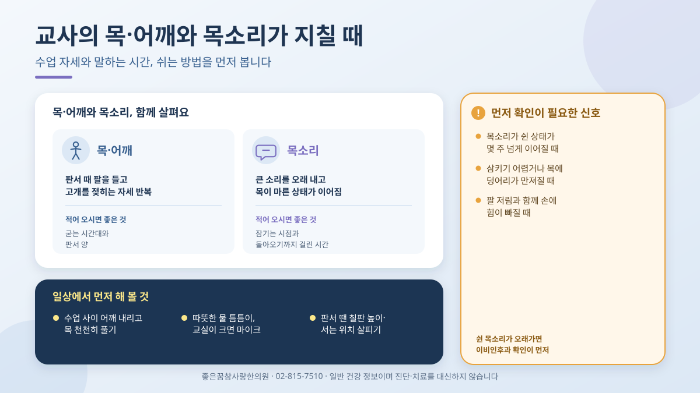
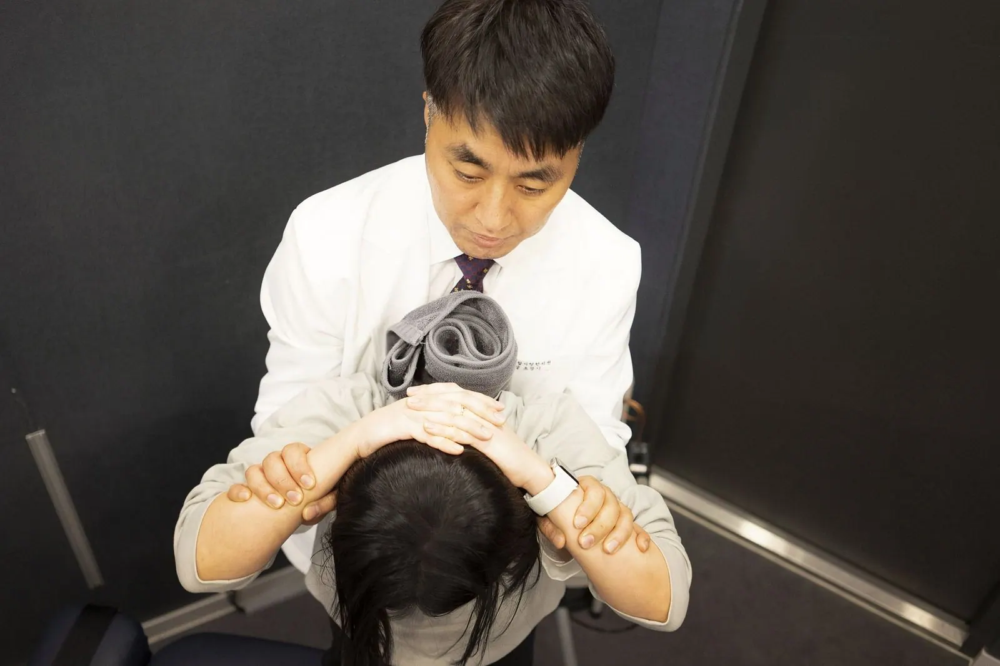

오래 서서 판서하고 말하는 교사는 목과 어깨가 굳고 목소리까지 쉽게 지칠 수 있습니다. 수업 중 자세와 말하는 시간, 쉬는 방법을 먼저 묻고 목과 목소리를 함께 아끼는 습관을 점검합니다.
여쭙는 것
- 수업이 끝날 무렵 목과 어깨 중 어디가 먼저 뻐근한가요?
- 하루에 말을 하는 시간이 대략 얼마나 되나요?
- 서서 하는 수업이 많은가요, 앉아서 하는 시간이 섞여 있나요?
생활에서 해 볼 것
- 판서는 칠판의 눈높이부터 아래쪽을 주로 쓰고, 위쪽을 써야 할 때는 한 걸음 물러서…
- 판서할 때는 말을 잠시 멈추고, 학생 쪽으로 돌아선 뒤 다시 말합니다.
- 교실이 크다면 마이크를 써서 목소리 크기를 줄이고, 주목을 모을 때는 손뼉이나 정해…
한의원에서 함께 살필 것
- 수업이 끝나면 목과 어깨가 굳어 고개 돌리기가 불편한 경우 자세와 근육의 긴장을 함…
- 목이 자주 잠기고 쉽게 피로해지는 경우 말하는 시간과 쉬는 방법을 함께 살핍니다.
- 피곤이 쌓여 퇴근 후 아무것도 하기 싫은 경우 잠과 식사, 마음의 부담을 함께 살핍…
먼저 확인이 필요한 신호
- 목소리가 쉰 상태가 2~3주 넘게 이어지는 경우
- 삼키기 어렵거나 목에 덩어리가 만져지는 경우
- 팔 저림과 함께 손에 힘이 빠지는 경우

칠판을 향해 팔을 들고 학생들을 향해 목소리를 높이는 하루는 목과 어깨에 생각보다 많은 힘을 쓰게 합니다. 학기 말이 다가오면 쌓인 피로가 목소리 잠김과 뒷목 뻐근함으로 한꺼번에 느껴지기도 합니다. 자세와 목소리 쓰는 습관을 함께 살피면 부담을 나눠 줄일 수 있습니다.
왜 이런 불편이 생길 수 있나요
- 판서할 때 팔을 들고 고개를 젖히는 자세가 반복되면 목과 어깨 근육이 쉬지 못합니다.
- 큰 소리를 오래 내면 목 주변 근육이 함께 긴장하고, 목이 마른 상태가 이어지면 목소리가 쉽게 잠길 수 있습니다.
- 칠판을 보며 말하면 소리가 학생 쪽으로 덜 가서 목소리를 더 크게 내게 되기 쉽습니다.
- 서 있는 시간이 길면 체중이 한쪽 다리에 실리면서 어깨 높이까지 기울어지는 경우가 있습니다.
- 쉬는 시간에도 업무와 상담이 이어지면 몸이 회복할 틈이 줄어듭니다.

먼저 이렇게 여쭙니다
- 수업이 끝날 무렵 목과 어깨 중 어디가 먼저 뻐근한가요?
- 하루에 말을 하는 시간이 대략 얼마나 되나요?
- 서서 하는 수업이 많은가요, 앉아서 하는 시간이 섞여 있나요?
- 목소리가 잠기는 날과 목·어깨가 뻐근한 날이 겹치나요?
- 물을 마시거나 쉬는 시간은 어떻게 확보하시나요?
일상에서 먼저 해 볼 수 있는 것
수업하는 동안
- 판서는 칠판의 눈높이부터 아래쪽을 주로 쓰고, 위쪽을 써야 할 때는 한 걸음 물러서서 고개를 과하게 젖히지 않게 합니다.
- 판서할 때는 말을 잠시 멈추고, 학생 쪽으로 돌아선 뒤 다시 말합니다.
- 교실이 크다면 마이크를 써서 목소리 크기를 줄이고, 주목을 모을 때는 손뼉이나 정해 둔 신호를 씁니다.
- 체중을 양발에 고르게 싣고, 오래 서 있을 때는 낮은 받침에 한 발씩 번갈아 올립니다.
쉬는 시간 1~2분
- 미지근한 물을 몇 모금 마십니다.
- 어깨를 내리고 턱을 뒤로 살짝 당겨 5초 버티기를 5번 합니다.
- 팔을 몸 옆에 내리고 손바닥을 앞으로 돌리며 가슴을 펴기를 5번, 고개를 옆으로 기울여 15초씩 머뭅니다.
- 입을 다문 채 낮게 '음' 하고 30초쯤 허밍하며 목 주변 힘을 뺍니다.
점심시간 5분
- 5분은 말을 하지 않는 시간으로 정해 목소리를 쉬게 합니다. 속삭이는 말투는 오히려 목에 힘이 들어갈 수 있어 피합니다.
- 앉아서 다리를 쉬게 하고, 끼니는 거르지 않습니다.
퇴근 뒤 10분
- 따뜻한 샤워나 수증기로 목을 촉촉하게 하고, 따뜻한 수건으로 목과 어깨를 데웁니다.
- 벽에 등을 대고 서서 팔을 W자로 올렸다 내리기를 10번 합니다. 판서로 앞으로 말린 어깨를 펴 주는 동작입니다.
- 조용한 시간을 가져 목소리와 귀를 쉬게 합니다.

상황별 예시
- 예를 들어 하루 5~6교시를 연달아 맡는 중학교 교사가 목요일쯤이면 목소리가 잠기고 뒷목이 뻐근하다면, 연속 수업 사이에 물과 1분 목·어깨 풀기를 넣고, 하루 한 번은 모둠 활동처럼 말을 덜 하는 수업 방식을 끼워 봅니다.
- 예를 들어 초등학교 담임교사가 교실 뒤쪽 아이들까지 들리게 말하느라 목에 힘이 들어간다면, 마이크를 쓰고 목소리 대신 쓸 수 있는 주목 신호를 아이들과 정해 둡니다.
- 예를 들어 학원에서 저녁 늦게까지 강의하는 강사가 퇴근 뒤 잠이 얕다면, 목소리 휴식과 함께 잠드는 시각과 늦은 식사를 살핍니다.
스스로 점검해 보세요
- 수요일이나 목요일쯤이면 목소리가 잠긴다.
- 수업이 끝나면 뒷목과 어깨가 굳어 고개 돌리기가 불편하다.
- 판서할 때 고개를 젖히고 팔을 머리 위까지 드는 일이 많다.
- 쉬는 시간에도 상담이나 업무로 말을 쉬지 못한다.
- 하루 물을 네 컵도 마시지 못하는 날이 많다.
- 헛기침으로 목을 가다듬는 버릇이 있다.
- 퇴근 뒤 지쳐 잠이 얕거나 자주 깬다.

한의원에서 함께 살필 수 있는 경우
- 수업이 끝나면 목과 어깨가 굳어 고개 돌리기가 불편한 경우 자세와 근육의 긴장을 함께 살핍니다.
- 목이 자주 잠기고 쉽게 피로해지는 경우 말하는 시간과 쉬는 방법을 함께 살핍니다.
- 피곤이 쌓여 퇴근 후 아무것도 하기 싫은 경우 잠과 식사, 마음의 부담을 함께 살핍니다.
좋은꿈참사랑한의원에서는 첫 방문 때 하루 수업 시수와 판서 양, 목소리를 쓰는 시간을 먼저 듣습니다. 그다음 맥부터 짚어 보고 혀와 배를 살펴 잠과 식사, 쌓인 긴장을 함께 봅니다. 필요하다고 판단될 때 목과 어깨의 움직임을 직접 확인한 뒤 침·약침·추나 등을 상태에 맞춰 정하고, 쉬는 시간에 해 볼 방법을 함께 정리합니다. 목소리 이상이 오래가면 이비인후과 확인을 먼저 안내합니다. 다시 오시면 지난 이야기를 이어서 목소리가 잠긴 요일과 잠이 어땠는지부터 여쭙습니다. 평일은 저녁 8시까지 진료해 퇴근 뒤에도 들를 수 있습니다.
얼마나 지켜보고 언제 상담할까요
- 쉬는 시간 1분 풀기와 물 마시기, 마이크 쓰기를 2주쯤 해 보며 목소리가 잠긴 요일과 뒷목 뻐근함을 0~10점으로 적어 봅니다.
- 주말이나 방학에 쉬어도 목·어깨 뻐근함이 그대로라면 상담을 받아 보세요.
- 쉰 목소리가 2~3주 넘게 이어지면 이비인후과에서 성대 상태를 먼저 확인합니다.
- 팔 저림이나 손의 힘 빠짐이 생기면 미루지 말고 확인합니다.

이렇게 기록해 오시면 상담이 쉬워집니다
- 하루 수업 시수와 연속 수업이 몰리는 요일
- 목소리가 잠기는 시점과 돌아오기까지 걸리는 시간
- 목·어깨가 굳는 시간대와 판서 양
- 복용 중인 약이나 목에 쓰는 약
이런 증상은 먼저 확인이 필요합니다
- 목소리가 쉰 상태가 2~3주 넘게 이어지는 경우
- 삼키기 어렵거나 목에 덩어리가 만져지는 경우
- 팔 저림과 함께 손에 힘이 빠지는 경우
- 목소리가 갑자기 나오지 않거나 숨쉬기가 답답한 경우
쉰 목소리가 오래가면 이비인후과에서 성대 상태를 먼저 확인하세요. 숨쉬기가 힘들면 지체하지 말고 119에 연락하세요. 복용 중인 약은 처방한 의사와 상의 없이 줄이거나 끊지 않습니다.

관련 글
- 강의를 많이 해서 목소리가 자주 쉬는 분은 어떻게 관리하면 좋을까요?
- 하루 종일 말하는 교사가 저녁에 기운이 빠지고 잠이 얕을 때는 어떻게 살피나요?
- 거북목과 라운드숄더는 집에서 어떤 스트레칭을 해 볼 수 있나요?
한눈에 보는 표
| 구분 | 핵심 |
|---|---|
| 여쭙는 것 | 수업이 끝날 무렵 목과 어깨 중 어디가 먼저 뻐근한가요? 하루에 말을 하는 시간이 대략 얼마나 되나요? |
| 생활에서 해 볼 것 | 판서는 칠판의 눈높이부터 아래쪽을 주로 쓰고, 위쪽을 써야 할 때는 한 걸음 물러서서 고개를 과하게 젖히지 않게 합니다. 판서할 때는 말을 잠시 멈추고, 학생 쪽으로 돌아선 뒤 다시 말합니다. |
| 한의원에서 함께 살필 것 | 수업이 끝나면 목과 어깨가 굳어 고개 돌리기가 불편한 경우 자세와 근육의 긴장을 함께 살핍니다. 목이 자주 잠기고 쉽게 피로해지는 경우 말하는 시간과 쉬는 방법을 함께 살핍니다. |
| 먼저 확인이 필요한 신호 | 목소리가 쉰 상태가 2~3주 넘게 이어지는 경우 삼키기 어렵거나 목에 덩어리가 만져지는 경우 |
자주 묻는 질문
방학이 되면 저절로 괜찮아지나요?
쉬면 가라앉는 경우도 많지만, 방학에도 이어진다면 자세와 생활 습관을 함께 점검해 볼 만합니다.
목소리가 잠길 때 헛기침으로 가다듬어도 되나요?
헛기침을 자주 하면 목에 자극이 더해질 수 있어, 물을 한 모금 마시거나 침을 삼키는 쪽을 권하는 경우가 많습니다.
목 스트레칭은 얼마나 해야 하나요?
아프지 않은 범위에서 천천히, 쉬는 틈마다 짧게 하는 방식이 부담이 적습니다.
목이 마를 때 무엇을 마시면 좋나요?
미지근한 물을 조금씩 자주 마시는 것이 부담이 적습니다. 커피처럼 카페인이 많은 음료는 몸을 마르게 할 수 있어 양을 조절하는 편이 좋습니다.
쉬는 시간 10분 동안 무엇부터 하면 좋을까요?
물 몇 모금, 1~2분 말 멈추고 어깨 내리기, 턱 당기기 순서로 해 보세요. 다음 수업 준비로 바쁘더라도 첫 1분만큼은 목소리와 어깨를 쉬게 하는 시간으로 정해 두면 이어 가기 쉽습니다.
이 글은 일반적인 건강 정보이며 개인의 진단이나 치료를 대신하지 않습니다. 증상이 있거나 복용 중인 약이 있다면 진료를 통해 확인하세요. 치료 효과는 개인마다 다를 수 있습니다.
작성 기준: 일반적으로 알려져 있는 건강 정보를 참고해 정리했습니다(대표원장 감수). 증상 기록은 1~2주 동안 하루 1회, 비슷한 시간에 적어 오시면 지난 상태와 비교하기 쉽습니다.
좋은꿈참사랑한의원은 재진 때 지난번 이야기부터 이어서 여쭙니다. 진료시간과 예약은 오시는 길에서 확인하세요.
어디서 상담받을 수 있나요?
좋은꿈참사랑한의원은 서울 동작구 만양로2길 2 신성빌딩 3층·5층(서울 동작구 상도동, 7호선 상도역 3번 출구 근처)에 있습니다. 한의사 3명(이종호 대표원장, 조영기 수석진료원장, 정원영 진료원장)이 진료합니다. 진료시간은 평일 09:30~20:00(점심 13:00~14:00), 토·일·공휴일 09:30~15:00이며, 방문 전 전화로 확인을 권합니다. 예약은 네이버 예약, 카카오톡 상담, 전화 02-815-7510로 받습니다.